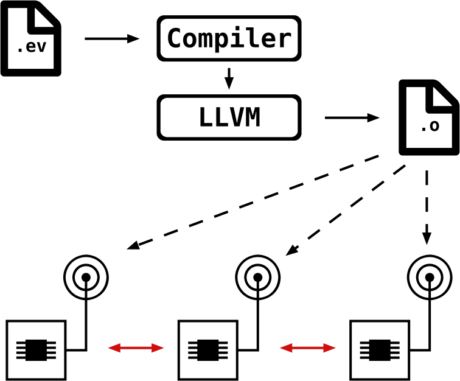

Overview
Motivation
Event is a language for rule based complex-event processing on distributed networks. Therefore we need to face several challenges. The event language needs to be runnable on targets with varying architectures and computational power. On the one hand Atmel microcontrollers may be used for simple sensor nodes with little processing power. For these low-end applications the event-processors need to be compiled statically to be run efficiently. In contrast ARM or even x86 nodes take on the more complex processing operations. For these applications just in time compilation may be advantageous, because it allows rules to be added or modified dynamically during runtime. For either class there is the necessity of being able to transmit event-programms via network. Our solution is an approach based on the LLVM compiler infrastructure. LLVM includes libraries and tools facilitating the creation of custom compilers. We use LLVM by emitting its intermediate representation (IR) in the code-generation phase of our compiler. This IR can then be translated by the LLVM to numerous platform specific assembler languages. This allows us to address the different targets in the embedded network without having to create separate code-generators for each target. The resulting binary obejct files can then be transmitted via the network to the nodes. There, the contained event-processors can be employed to process, exchange and generate new events.
The following graphic illustrates this approach:

Core Concepts
The Event language is comprised of four toplevel constructs. Together these form an intuitive way of describing how events should be processed:
- Events (Syntax) are the currency of data. Processing and generating events, is the main task of this language. Events are defined as composite types featuring an arbitrary number of vector fields. Events can inherit other events, meaning that the parent-event's fields are prepended to the child-event's fields. An event of a child type may be used anywhere where an event of its parent type is valid.
- Functions (Syntax) receive a set of events as input and use them to construct a new event. The input events remain unmodified.
- Predicates (Syntax) like functions receive a set of events as input and use them to generate a boolean decision based on the values of the input events' fields.
-
Rules (Syntax) combine the previous three elements to define in which way events are processed. They consist of:
- Event types defining what may be processed
- Predicates defining if it is to be processed
- A Function defining how it is to be processed.